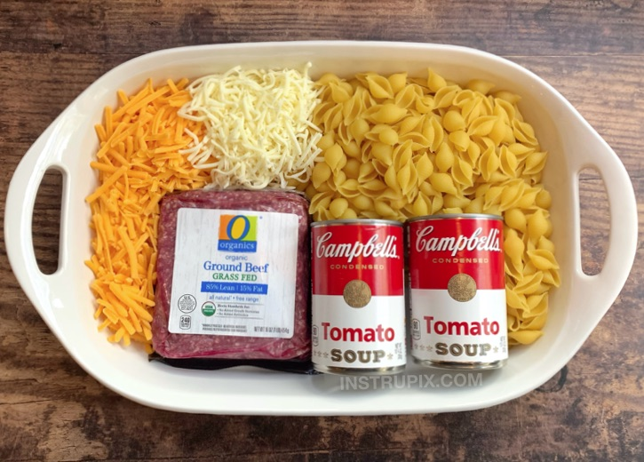

Hamburger Casserole

Description
This quick and easy dinner casserole is made with simple and cheap ingredients, takes very little time to prepare, and my entire family always goes back for seconds.
Not only is it incredibly yummy, it also has a short and budget friendly shopping list: ground beef, pasta shells, tomato soup, cheese and seasoning to taste. I know, that doesn't sound like much, but when it all comes together it's like eating a cheeseburger out of a pan, which is very comforting especially in the cold winter months.
Ingredients
- 1/2 box medium pasta shells
- 250 gr ground beef
- 2 cups shredded cheddar
- 1 cups shredded mozzarella
- 1/2 cup water
- seasoning to taste
Steps
- You'll start by cooking and draining the pasta according to the package directions.
- Next, brown the beef in a large skillet with a little garlic powder, salt and pepper. You could also throw in a diced onion if you'd like.
- Once the beef is brown, toss the pasta shells, tomato soup, a little water, and half of the cheese in with the beef, and then mix it all up.
- Pour the mixture into a large 9x13 greased baking dish. Top it with the remaining cheese and then bake covered with foil in a 375 degree oven for 20 minutes.
- Uncover and bake for an additional 10 minutes to brown the cheese. I also like to turn the oven to broil for the last few minutes to make it a little toasty.